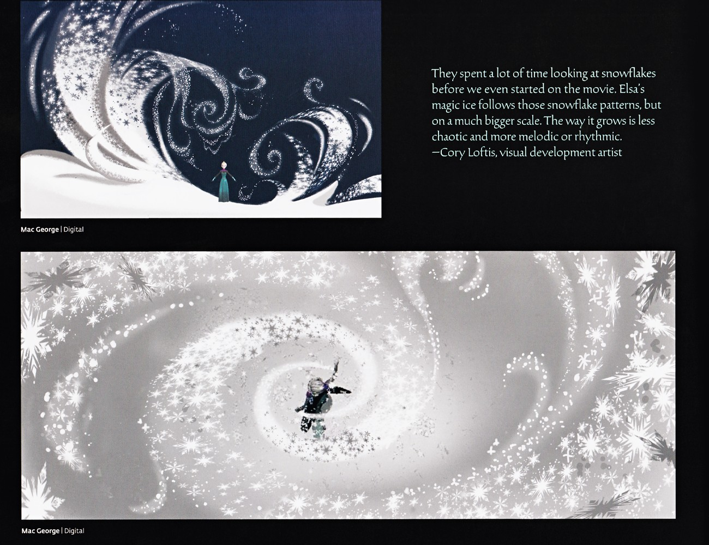

艾莎的魔法源于自然、由水构成（艾莎的冰是水的元素形态）。设定集将其界定为"她以本质的方式属于自然"，即魔法并非诅咒，而是天赋。《Conceal, Don't Feel》中伊杜娜的亲笔信明确指出"Your powers are a gift"。（来源：《电影2艺术设定集》· 第11页） （来源：《Conceal, Don't Feel》· 引文片段（母亲信））
这种"源于自然"的定性，构成了理解艾莎全部魔法的基础。她的力量并非外来诅咒或被施加的术法，而是与她的生命本身同构的天赋——正如水本是自然界的一部分，她的冰也本就是水的固态。电影1中她逃离加冕礼、在"Let It Go"里第一次毫无保留地释放时，造出的冰宫、雪怪与漫天飞雪，本质都是对同一种自然元素的塑形；到了电影2，她更能直接操控液态水（冰封 Dark Sea 的滔天巨浪、以冰桥跨越裂谷），进一步印证其魔法始终游走在"冰—雪—霜—水"这一连续谱上。
从造物类型看，艾莎的魔法可大致分为四类：其一是冰（锋利的冰棱、冰晶王冠、坚固的冰宫与冰船），偏结构与防御；其二是雪（细碎的飘雪、由雪堆成的雪怪 Marshmallow、可被复活的雪宝），偏柔软与生命感；其三是霜（玻璃上蔓延的蕨叶状冰花、物体表面瞬间的覆霜），偏纹样与装饰；其四是水本身（冻结、塑形、引导水流），是前三者的"母态"。四种形态互为表里，说明她的天赋是一个完整而自洽的自然体系，而非零散的戏法。
这一点恰恰解释了艾莎为何能与四大自然之灵共鸣。四灵本就是风、火、地、水四种自然元素的化身；艾莎的魔法既然以"水"为根基，便与其中水之灵 Nokk 天然同宗。电影2里她初遇 Nokk 时以冰马对撞、最终以"Show Yourself"中的从容与它融为一体，正是"同源之力相互辨认"的隐喻。换言之，艾莎的魔法不是凌驾于自然之上的超能力，而是自然借她之手的一次显形——这也是她后来被认定为"第五灵"的根本原因。（来源：《电影2艺术设定集》· 第49、117页）
📌 艾莎施法递进概念图，体现"冰晶王冠—冰裂—剪影"的魔法生长节奏（电影1艺术设定集）。